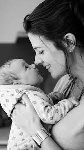
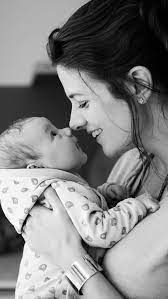
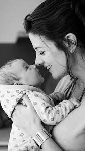

Relaciones Comunitarias Consultores provee asesoría en estudios sociales, gestión y desarrollo comunitario, con sustento en un equipo profesional de extensa trayectoria en el campo de las ciencias sociales aplicadas. Desde un enfoque interdisciplinario, realizamos investigación - acción en el ámbito comunitario y organizacional, en un marco ético de responsabilidad social, solidaridad, transparencia y empoderamiento de los sujetos. Trabajamos con empresas, instituciones y comunidades; como facilitadores del diálogo y la construcción de experiencias de desarrollo sustentable. Nuestro equipo además realiza docencia e investigación; aportando desde esta actividad a la reflexión y debate académico y a la sistematización de mejores prácticas en el ámbito de la responsabilidad social y comunitaria.
Estudios e investigaciones sociales aplicadas, como líneas base sociales, diagnóstico comunitario y organizacional, análisis de clima y cultura, estudios etnográficos y socio-históricos, entre otros.
Locales a través de capacitación, manejo y resolución de conflictos, mediación comunitaria, planificación estratégica local, etc.
Procesos de relación con la comunidad, desarrollando herramientas y metodologías apropiadas para el diagnóstico, diseño y evaluación de sus resultados.

Desarrollamos estudios e investigación social aplicada, como líneas base socioambientales, diagnóstico comunitario y organizacional, análisis de clima y cultura, estudios etnográficos y socio-históricos, entre otros.
Asesoramos y acompañamos procesos de relación con la comunidad, desarrollando herramientas y metodologías apropiadas para el diagnóstico, diseño y evaluación de sus resultados.
Intervenimos en procesos sociales locales a través de la capacitación, manejo y resolución de conflictos, mediación comunitaria, planificación estratégica local, etc.
Diseñamos, ejecutamos y evaluamos, de acuerdo con los más altos estándares nacionales e internacionales, procesos de participación y consulta comunitaria tanto para instituciones públicas como proyectos de inversión.
Acompañamos procesos de consulta indígena previa, en el marco del Convenio 169 de OIT, facilitando el diseño de instancias de diálogo con pertinencia cultural y ejercicio de derechos.
Diseñamos, evaluamos y gestionamos procesos de comunicación pública, organizacional y comunitaria, desarrollando planes de comunicación y medios, análisis y monitoreo de medios, estudios de percepción, de opinión, de imagen corporativa, etc.
Apoyamos la incorporación de las mejores prácticas internacionales en materia social en el sector privado, de acuerdo con estándares IFC, Banco Mundial, Principios de Ecuador, etc.
Profesionales con experiencia, dedicación y pasión
Antropóloga, Universidad Academia de Humanismo Cristiano. Magíster en Gestión de Políticas Nacionales, Universidad de Playa Ancha. Diplomado en Políticas Públicas Indígenas, Universidad Arturo Prat. Doctor(c) en Procesos e Instituciones Políticas, Universidad Adolfo Ibáñez.
Psicóloga - Matrona, Universidad de Chile; Master of Public Affairs University of Texas.
Ingeniero Civil en Geografía, Universidad De Santiago de Chile. Máster en Smart City, Universidad de Barcelona.
Coach Ontológico Organizacional nivel Senior, NewField Consulting, ECORE.
Antropóloga Sociocultural, Universidad Arturo Prat; Magister en Liderazgo, Comunicación y Dirección Estratégica(c), Universidad de La Serena; Curso de especialización en Convenio 169 de la OIT, Facultad de Derecho de la Universidad de Chile.